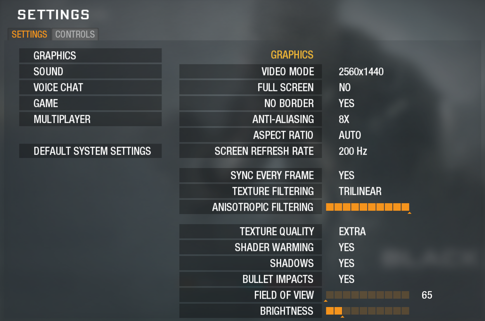
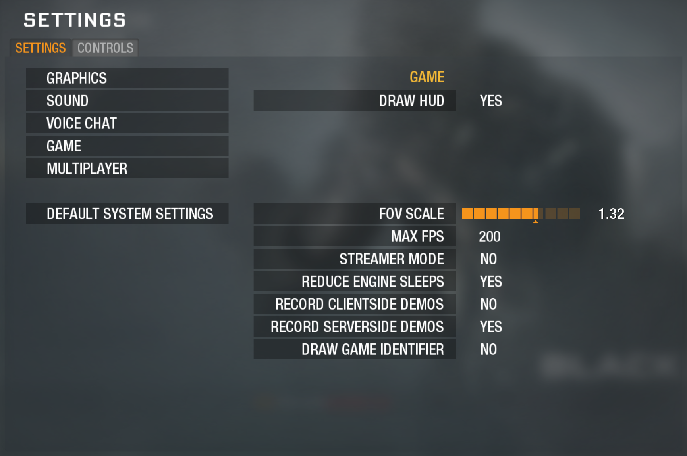
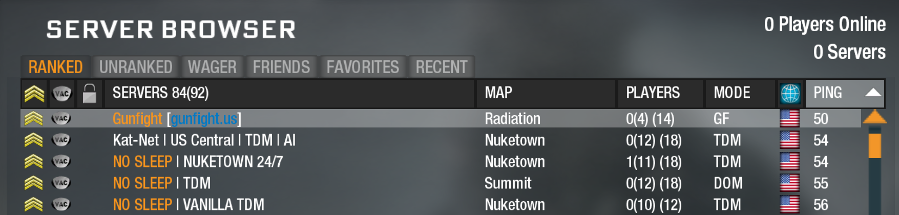

Getting Started
Install · settings · joining the server
Black Ops Gunfight runs on the Plutonium T5 client for Call of Duty: Black Ops 1 (PC only). You need a copy of the game — from Steam or our Discord.
1. Install Plutonium & Black Ops 1
Plutonium is a free community client that runs Black Ops 1 online. Full official walkthrough: plutonium.pw/docs/install.
- 1
Download the launcher. Get
plutonium.exefrom plutonium.pw. Save it anywhere convenient — your Desktop or the game folder both work. - 2
Run it. If Windows SmartScreen shows “Windows protected your PC”, click More info → Run anyway. The launcher then installs its client files.
- 3
Log in. Sign in with your Plutonium forum account. Don’t have one? Create a free account at forum.plutonium.pw/register, then log in.
- 4
Point it at Black Ops. Select the Black Ops T5 Multiplayer tab, click SETUP, and choose your Black Ops game folder. A Steam copy is usually at
C:\Program Files (x86)\Steam\steamapps\common\Call of Duty Black Ops(in Steam: right-click the game → Manage → Browse local files). If you downloaded the game from elsewhere (such as our Discord), pick the unzipped Black Ops folder instead. - 5
Launch. Press PLAY. That’s it — you’re in.
Re-selecting the folder later: use Game Settings (next to the PLAY button), not SETUP.
“Invalid Game Path” error? The folder you picked isn’t a valid Black Ops install (wrong folder, or missing/renamed game files). Re-select the correct Call of Duty Black Ops folder via Game Settings.
2. Recommended settings
Black Ops is old, but with Plutonium it can be optimized for modern systems. Here are a few critical tweaks to get the game looking sharp and running fast.
Graphics
| Setting | Recommended |
|---|---|
| Video mode (resolution) | Highest your display supports (e.g. 2560×1440 for 2K) |
| Aspect ratio | Auto |
| Screen refresh rate | Highest (e.g. 144 / 240) |
| No border (borderless fullscreen window) | Yes |
| Sync every frame (V-Sync) | Yes |
| Anti-Aliasing | 8× |
| Anisotropic filtering | 16 (max) |
| Texture filtering | Trilinear |
| Texture quality | Extra |
| Shader warming | Yes |
| Shadows | Yes |
| Bullet impacts | Yes |
| Field of view | (see below) |
| Brightness | Not too high |

Field of view (FOV)
The in-game Field of view slider maxes out at 80, but Plutonium lets you push wider by combining it with FOV scale (Game tab). Your true FOV is cg_fov × cg_fovScale, so any scale above 1 takes you past 80. Set both from the in-game Options menu (Field of view on the Graphics tab, FOV scale on the Game tab), or type them straight into the console as cg_fov and cg_fovScale. If you don’t want to use this system, just leave FOV scale at 1.
FOV scale also drives your aim-down-sights (ADS) sensitivity. Plutonium reworked how cg_fov and cg_fovScale behave: the vanilla game slows your sensitivity when you aim down sights, but Plutonium now bases it on your FOV scale instead. A few examples (each totalling 90 FOV):
cg_fov 90+cg_fovScale 1= 90 FOV. Only your hipfire FOV changes; sensitivity still differs when you zoom in, because the ADS FOV is lower.cg_fov 40+cg_fovScale 2.25= 90 FOV. Your ADS FOV matches your hipfire FOV — more situational awareness at the cost of less zoom detail — so sensitivity is the same hipfiring and aiming.cg_fov 70+cg_fovScale 1.3= 90 FOV. ADS is slightly zoomed in versus hipfire, and sensitivity is faster than vanilla because of the higher total FOV.
To work out your total FOV, multiply cg_fov by cg_fovScale — for a standard 80 FOV, use cg_fov 65 and cg_fovScale 1.32. Expect to experiment with values to find what feels comfortable.
How to open the console
Press the ~ key (tilde / grave, top-left under Esc) to open the Plutonium console. If nothing happens, enable the console in the Plutonium launcher/in-game options first, then press ~ again. Type a command and hit Enter — you’ll need it for the Sprint/ADS improvement below.
Game
| Setting | Recommended |
|---|---|
| Draw HUD | Yes |
| FOV scale | (see above) |
| Max FPS | Highest (e.g. 144 / 240) |
| Reduce engine sleeps | Yes |

Multiplayer
| Setting | Recommended |
|---|---|
| Allow downloading | Yes (needed to auto-download the mod) |
Allow downloading must be on. It lets Plutonium fetch the Gunfight mod from the server automatically when you join (FastDL) — no manual install.
Controller
- Controls → Gamepad → Yes to enable controller support.
- If you are using a PlayStation controller, use DS4Windows to present it as an Xbox controller.
Mouse & Keyboard: Sprint/ADS improvement
Black Ops 1 has a long-standing quirk: you can’t aim down sights while the Sprint key (Shift) is held. Normally you have to fully release Shift before you can aim — which loses gunfights. One console command fixes it.
Open the console (~) and paste:
bind MOUSE2 "+speed_throw; -breath_sprint; -sprint"Now you can ADS without releasing Sprint. What it does: aiming (+speed_throw) also clears the sprint input (-breath_sprint) so the engine stops blocking your aim. The trailing -sprint is a required no-op — it absorbs the key event so the sprint release actually fires.
The game sometimes strips custom MOUSE2 binds on restart. If ADS goes dead, just re-paste the line.
3. Find & join Gunfight
Black Ops Gunfight is a ranked server. Join through the in-game Server Browser.
- 1
Launch the game via the Plutonium launcher.
- 2
Open the Server Browser under PLAY.
- 3
Reset the filters and click Refresh so every server shows (modded servers are hidden by default filters).
- 4
On the Ranked tab, find Gunfight | gunfight.us (mode GF) and join. The mod downloads automatically on connect (FastDL) — no manual install needed.
First join only: after the download finishes, the game rebuilds itself around the mod and your screen may go black for a few minutes. This is normal — let it finish and it will drop you into the match. Still black after ~5 minutes? Close the game and rejoin: the mod is already downloaded, so the second join is quick. Every join after that is instant.
Keep your Plutonium launcher updated so its build matches the server’s — FastDL ships the mod, not the engine build. Questions? Join our Discord.

4. Troubleshooting
| Problem | Fix |
|---|---|
| Can’t aim down sights while holding Sprint | Paste the ADS bind from the Sprint/ADS improvement section. |
| ADS stopped working after a restart | Re-paste the bind MOUSE2 ... line. |
| “Invalid Game Path” in the launcher | Re-select the correct Call of Duty Black Ops folder via Game Settings. |
| Gunfight isn’t in the server list | Reset all filters, click Refresh, and check the Ranked tab for Gunfight | gunfight.us. |
| Black screen after the mod downloads (first join) | Normal on the very first join — the game is rebuilding itself around the mod. Give it a few minutes and it drops you into the match. Still black after ~5 minutes? Close the game and rejoin — the second join is quick. |
| Error connecting to the server | Make sure your Plutonium client is up to date, then rejoin. |
| Controller not detected | Enable Controls → Gamepad → Yes; if needed, run DS4Windows. |
Made by KL9 · Discord · GitHub
Trademarks used are owned by their respective owners.
This mod is not endorsed by or affiliated with the copyright holders of the base game in any form.